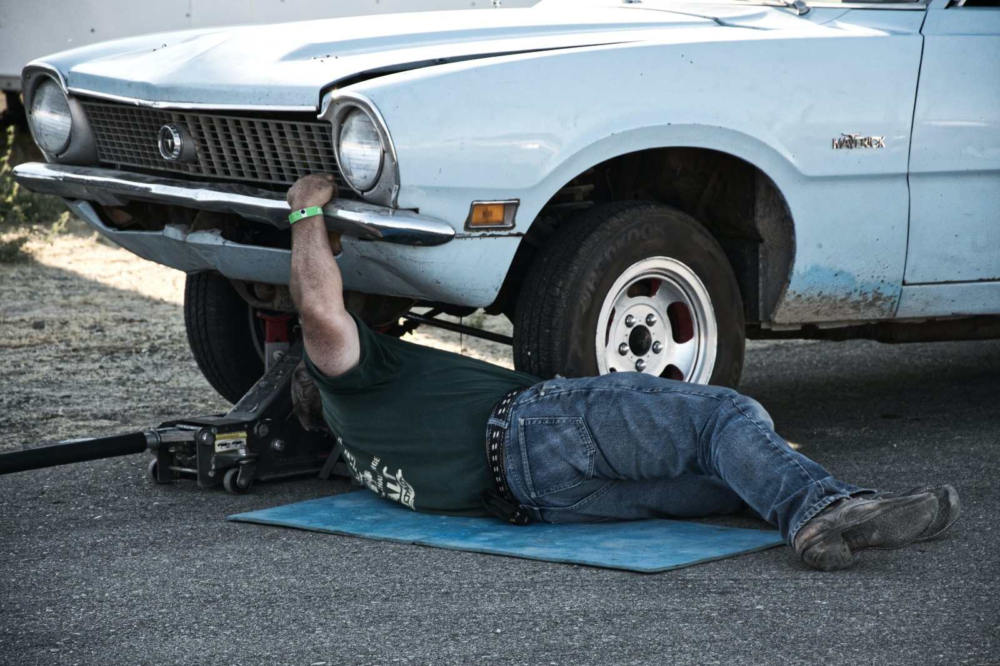

-

Mehanicar
Mehaničari su stručnjaci u području popravka i održavanja vozila, ključni igrači u održavanju funkcionalnosti automobila. Njihova stručnost obuhvaća dijagnostiku kvarova, popravke motora, zamjenu dijelova i redovno održavanje vozila. Mehaničari su ključni za osiguravanje sigurnosti i pouzdanosti vozila, izvodeći širok spektar radova od zamjene ulja do složenih popravaka. Njihova vještina i iskustvo često spašavaju vozače od neplaniranih kvarova na cesti. Uz brzu i preciznu intervenciju, mehaničari igraju nezamjenjivu ulogu u održavanju mobilnosti i dugovječnosti vozila, pridonoseći tako sigurnijem i učinkovitijem prometu.
-
Smeće od auta
Otpad na auto otpadu predstavlja široki spektar materijala koji se uklanja iz vozila tijekom procesa rastavljanja i recikliranja. To uključuje plastiku, staklo, metal, gume i druge materijale koji se pažljivo obrađuju kako bi se smanjili negativni utjecaji na okoliš. Stručnjaci na auto otpadima primjenjuju stroge smjernice za pravilno gospodarenje otpadom kako bi minimizirali ekološke rizike. Kroz inovativne tehnologije i postupke recikliranja, auto otpadi nastoje smanjiti količinu otpada koji završava na odlagalištima, pridonoseći održivijem pristupu gospodarenju resursima.
-
Kampiranje
Na auto otpadu, šator se često koristi kao privremena struktura za sklanjanje vozila ili dijelova tijekom procesa rastavljanja i recikliranja. Šatori pružaju zaštitu od nepovoljnih vremenskih uvjeta, omogućujući radnicima da u ugodnom okruženju obavljaju poslove održavanja i recikliranja. Ovi šatori često su opremljeni posebnim sustavima za ventilaciju i rasvjetom kako bi se osigurala učinkovita radna okolina. Kroz primjenu ovakvih privremenih struktura, auto otpadi mogu optimizirati svoje operacije, pridonoseći učinkovitom rukovanju vozilima koja čekaju recikliranje ili odlaganje.
-
Auto vuča
Vuča na auto otpadu predstavlja važan aspekt u procesu rukovanja vozilima koja su dostigla kraj svog životnog vijeka. Ovaj postupak uključuje sigurno premještanje vozila s različitih lokacija na auto otpadu, bilo da su dovedena vlastitim pogonom ili pomoću vučnih vozila. Vuča je ključna za organizaciju prostora na auto otpadu i omogućuje stručnjacima učinkovito rastavljanje i recikliranje vozila. Pruža i praktičan način za transport dijelova i materijala unutar otpada. Kroz sigurnu i odgovornu vuču, auto otpadi osiguravaju učinkovito upravljanje resursima i minimiziraju potencijalne rizike povezane s nepravilnim rukovanjem vozilima.
-

Inspekcija vozila
Lampe na auto otpadu igraju ključnu ulogu u rastavljanju i recikliranju vozila. Ovi sustavi rasvjete, koji uključuju farove, stop svjetla i žarulje unutar vozila, odvajaju se pažljivo tijekom procesa razgradnje. Stručnjaci na auto otpadu provode precizno razdvajanje i identifikaciju lampi koje su još uvijek funkcionalne i mogu se ponovno upotrijebiti. Oni također pravilno zbrinjavaju oštećene ili istrošene lampe, minimizirajući potencijalne negativne utjecaje na okoliš. Osim toga, recikliranje materijala iz lampi doprinosi smanjenju otpada i podržava održive prakse u industriji recikliranja vozila.
-
An elephant at sunset Alat
Alat na auto otpadu predstavlja ključnu opremu koja omogućuje stručnjacima učinkovito rukovanje, demontažu i recikliranje vozila. Opremljeni različitim vrstama alata, poput pneumatskih alata, ključeva, raznih kliješta i specijaliziranih strojeva, radnici na auto otpadu mogu precizno i brzo rastavljati dijelove vozila. Pravilna uporaba alata osigurava siguran i učinkovit postupak rukovanja, čime se olakšava recikliranje i zbrinjavanje materijala. Kroz održavanje i redovitu kontrolu alata, auto otpadi osiguravaju visoku razinu produktivnosti i održavaju opremu u optimalnom stanju za dugotrajnu upotrebu.